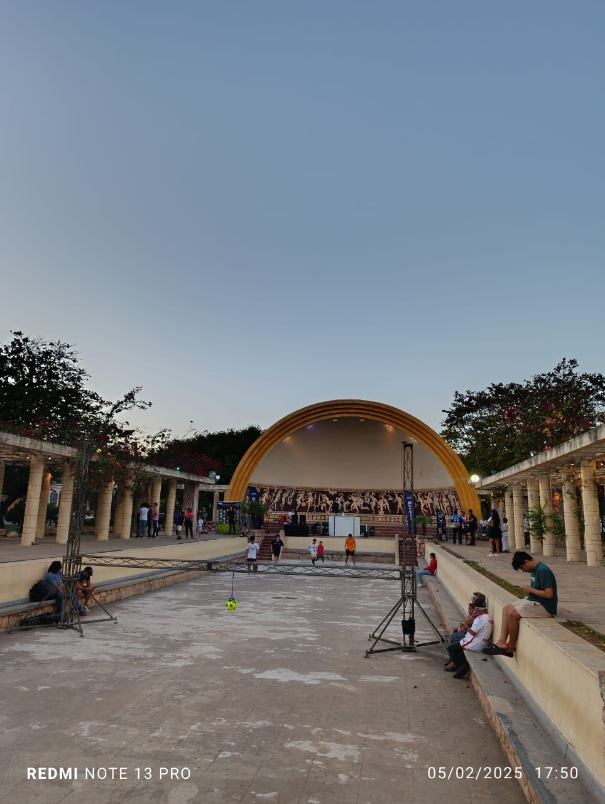
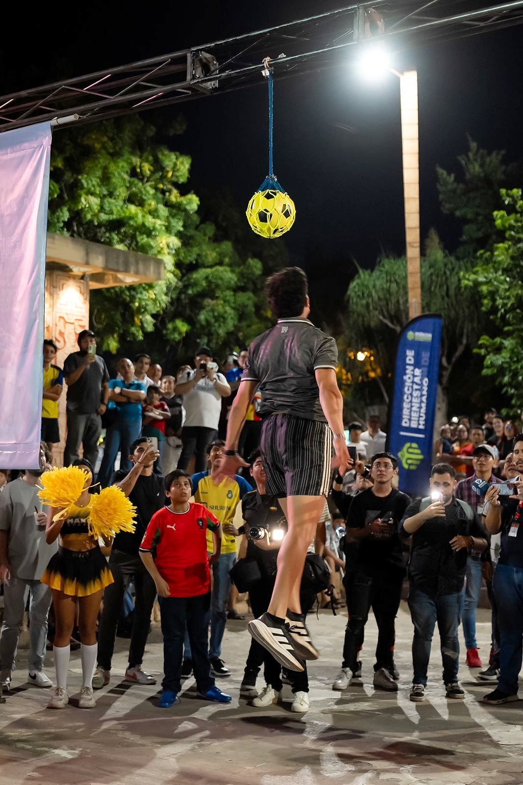

Por Reinier Coral · fundador de Grupo RC y organizador del evento
Por Reinier Coral · fundador de Grupo RC y organizador del evento
Todo empezó con una publicación
En Estados Unidos estaban organizando un intento de récord Guinness: la mayor cantidad de gente haciendo al mismo tiempo el festejo de Cristiano Ronaldo. Lo vi y lo publiqué en mi Facebook: qué padre sería estar ahí, o hacer algo así aquí en Yucatán. Un amigo me contestó con una frase sencilla: "tú podrías organizarlo".
Y así pasó. En lugar de perseguir un récord, decidimos hacerlo como un homenaje por el cumpleaños 40 del "Comandante". No solo íbamos a ir a gritar: armamos retos, conseguimos patrocinadores y premios, y pedimos el permiso al Ayuntamiento de Mérida para usar el Parque de las Américas.

La convocatoria se volvió noticia
Lanzamos la convocatoria el 15 de enero de 2025. En pocos días ya la estaban compartiendo medios de Coahuila, Torreón, Ciudad de México y Sonora. Después llegaron MARCA, RÉCORD, TUDN, FOX Sports, Latinus, Infobae y Mediotiempo. Contamos cerca de 100 notas, sin contar las entrevistas que nos hicieron antes y durante el evento.
El 5 de febrero
Desde temprano el parque empezó a llenarse de aficionados con las playeras de los equipos donde ha jugado CR7: Portugal, Real Madrid, Manchester United, Juventus y Al Nassr. Había familias completas, niños con su balón bajo el brazo y hasta un perro con el jersey del 7.
"Hoy no es un día cualquiera… ¡estamos de fiesta! Celebramos los 40 años del Comandante, Cristiano Ronaldo, el hombre que cambió el fútbol, rompió récords y nos enseñó que con trabajo y disciplina no hay imposibles."Reinier Coral, en la apertura del evento
Arrancamos con los retos: el Siuu Extremo para el grito más largo, el freestyle, el Torneo de los Mil Goles con una portería de Grupo RC y el reto estrella, El Salto del Bicho, con un balón dentro de una bolsa balonera RC colgado a 2.93 metros: la altura del cabezazo récord de Cristiano.

La figura de Cristiano en el photocall de Grupo RC no descansó en toda la noche. Tampoco las porterías.
A las 7:30, el Siuu
Llegó el momento para el que todos habían venido. Celulares arriba, cuenta regresiva y un "SIUUUUU" que retumbó en todo el Parque de las Américas. Después vino una sorpresa: un mensaje del actor de voz Christian García imitando a Cristiano, y saludos en video desde Portugal, Nueva York y Perú, donde también hubo festejos.
"Hoy el fútbol nos une en un solo grito. Así que prepárense, porque en unos momentos arrancan las actividades… y al final, juntos haremos historia con el SIUU más grande de todos los tiempos."Reinier Coral
Lo que nos dejó
Más de 500 personas, cerca de 100 notas de prensa y una pregunta que nos repitieron toda la noche: "¿el próximo año también?". Por eso en 2026 hicimos la segunda edición.